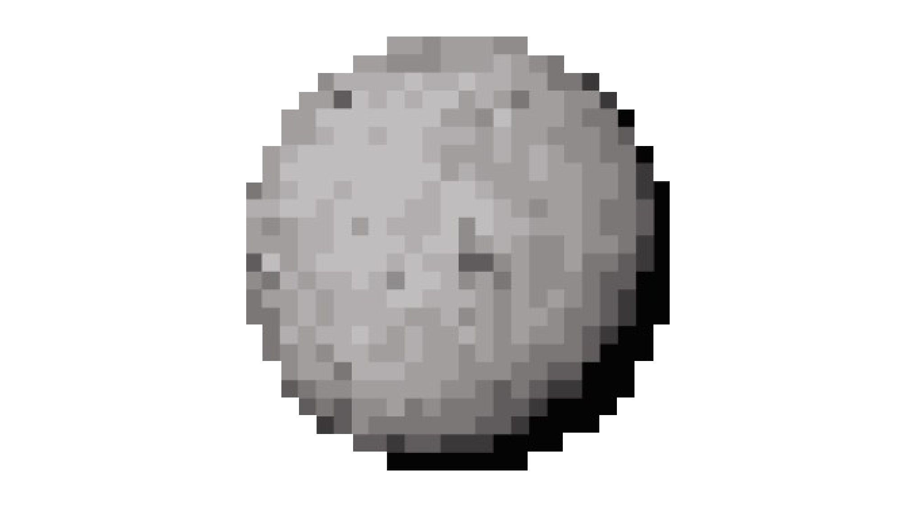

Main information
Pluto (minor-planet number 134340) is a dwarf planet in the Kuiper belt, a ring of bodies beyond the orbit of Neptune. It is the ninth-largest and tenth-most-massive known object to directly orbit the Sun. It is the largest known trans-Neptunian object by volume by a small margin, but is less massive than Eris. Like other Kuiper belt objects, Pluto is made primarily of ice and rock and is much smaller than the inner planets. Pluto has roughly one-sixth the mass of the Moon and one-third of its volume. Originally considered a planet, its status was changed when astronomers adopted a new definition of the word with new criteria.
Pluto has a moderately eccentric and inclined orbit, ranging from 30 to 49 astronomical units (4.5 to 7.3 billion kilometres; 2.8 to 4.6 billion miles) from the Sun. Light from the Sun takes 5.5 hours to reach Pluto at its orbital distance of 39.5 AU (5.91 billion km; 3.67 billion mi). Pluto's eccentric orbit periodically brings it closer to the Sun than Neptune, but a stable orbital resonance prevents them from colliding.
Pluto has five known moons: Charon, the largest, whose diameter is just over half that of Pluto; Styx; Nix; Kerberos; and Hydra. Pluto and Charon are sometimes considered a binary system because the barycenter of their orbits does not lie within either body, and they are tidally locked. New Horizons was the first spacecraft to visit Pluto and its moons, making a flyby on July 14, 2015, and taking detailed measurements and observations.
Pluto was discovered in 1930 by Clyde W. Tombaugh, making it the first known object in the Kuiper belt. It was immediately hailed as the ninth planet. However, its planetary status was questioned when it was found to be much smaller than expected. These doubts increased following the discovery of additional objects in the Kuiper belt starting in the 1990s, particularly the more massive scattered disk object Eris in 2005. In 2006, the International Astronomical Union (IAU) formally redefined the term planet to exclude dwarf planets such as Pluto. Many planetary astronomers, however, continue to consider Pluto and other dwarf planets to be planets.

Classification
From 1992 onward, many bodies were discovered orbiting in the same volume as Pluto, showing that Pluto is part of a population of objects called the Kuiper belt. This made its official status as a planet controversial, with many questioning whether Pluto should be considered together with or separately from its surrounding population. Museum and planetarium directors occasionally created controversy by omitting Pluto from planetary models of the Solar System. In February 2000 the Hayden Planetarium in New York City displayed a Solar System model of only eight planets, which made headlines almost a year later.
Ceres, Pallas, Juno and Vesta lost their planet status among most astronomers after the discovery of many other asteroids in the 1840s. On the other hand, planetary geologists often regarded Ceres, and less often Pallas and Vesta, as being different from smaller asteroids because they were large enough to have undergone geological evolution. Although the first Kuiper belt objects discovered were quite small, objects increasingly closer in size to Pluto were soon discovered, some large enough (like Pluto itself) to satisfy geological but not dynamical ideas of planethood.
In 1998, Brian G. Marsden of Harvard University's Minor Planet Center suggested that Pluto be given the minor planet number 10000 while still retaining its official position as a planet. The prospect of Pluto's "demotion" created a public outcry, and in response the International Astronomical Union clarified that it was not at that time proposing to remove Pluto from the planet list.
In the early 2000's, astronomers at Caltech led by Michael E. Brown undertook a wide survey of the skies using digital detection technology, finding numerous Trans-Neptunian objects. Many of these objects were initially measured as larger than or equal in size to Pluto, igniting a debate over whether or not to consider them planets. Later, estimates were revised down due to higher than expected albedos.
The debate became unavoidable when, in July 2005, these astronomers announced the discovery of a new object, Eris, which was substantially more massive than Pluto and the most massive object discovered in the Solar System since Triton in 1846. The press initially called it the tenth planet, although there was no official consensus at the time on whether to call it a planet. Others in the astronomical community considered the discovery the strongest argument for reclassifying Pluto as a minor planet.
- - - Rotation - - -
Pluto's orbital period is about 248 years. Its orbital characteristics are substantially different from those of the planets, which follow nearly circular orbits around the Sun close to a flat reference plane called the ecliptic. In contrast, Pluto's orbit is moderately inclined relative to the ecliptic (over 17°) and moderately eccentric (elliptical). This eccentricity means a small region of Pluto's orbit lies closer to the Sun than Neptune's. The Pluto–Charon barycenter came to perihelion on September 5, 1989, and was last closer to the Sun than Neptune between February 7, 1979, and February 11, 1999.
Although the 3:2 resonance with Neptune (see below) is maintained, Pluto's inclination and eccentricity behave in a chaotic manner. Computer simulations can be used to predict its position for several million years (both forward and backward in time), but after intervals much longer than the Lyapunov time of 10–20 million years, calculations become unreliable: Pluto is sensitive to immeasurably small details of the Solar System, hard-to-predict factors that will gradually change Pluto's position in its orbit.
The semi-major axis of Pluto's orbit varies between about 39.3 and 39.6 AU with a period of about 19,951 years, corresponding to an orbital period varying between 246 and 249 years. The semi-major axis and period are presently getting longer.
- - - The core - - -
Pluto's density is 1.853±0.004 g/cm3. Because the decay of radioactive elements would eventually heat the ices enough for the rock to separate from them, scientists expect that Pluto's internal structure is differentiated, with the rocky material having settled into a dense core surrounded by a mantle of water ice. The pre-New Horizons estimate for the diameter of the core is 1700 km, 70% of Pluto's diameter.
It is possible that such heating continues, creating a subsurface ocean of liquid water 100 to 180 km thick at the core–mantle boundary. In September 2016, scientists at Brown University simulated the impact thought to have formed Sputnik Planitia, and showed that it might have been the result of liquid water upweling from below after the collision, implying the existence of a subsurface ocean at least 100 km deep.
In June 2020, astronomers reported evidence that Pluto may have had a subsurface ocean, and consequently may have been habitable, when it was first formed.
In March 2022, a team of researchers proposed that the mountains Wright Mons and Piccard Mons are actually a merger of many smaller cryovolcanic domes, suggesting a source of heat on the body at levels previously thought not possible.